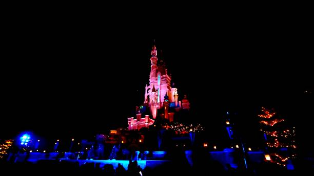
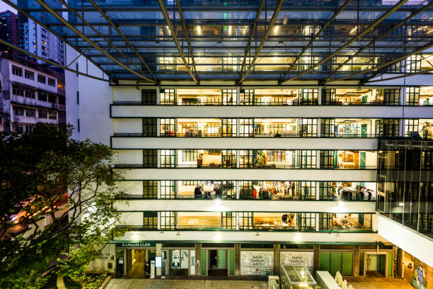

Asia's World City
This is a vibrant, fast-paced city where East meets West. With its stunning skyline, delicious dim sum, and unique blend of Chinese and British influences. It offers an unforgettable travel experience.
Can you guess my favorite travel destination?
Top 10 Must-Visit Attractions
| Description | Image |
|---|---|
| Victoria Peak - The highest point on its the most famous Island with spectacular city views | |
| Star Ferry - The iconic ferry ride across Victoria Harbour | |
| Disneyland - A magical theme park perfect for families |  |
| Temple Street Night Market - A lively market with street food and souvenirs | |
| Ocean Park - A marine-life theme park with roller coasters and animal exhibits | |
| Ngong Ping 360 - A cable car ride to the Tian Tan Buddha on Lantau Island | |
| Lan Kwai Fong - It's famous nightlife and dining district | |
| Wong Tai Sin Temple - A beautiful and popular Taoist temple | |
| Repulse Bay - A scenic beach with a mix of colonial and Chinese architecture | |
| PMQ - A creative hub with designer shops and restaurants in a former police dormitory |  |